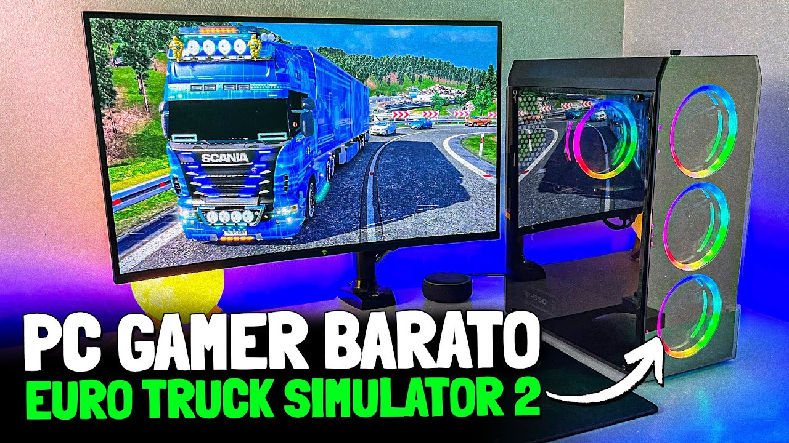
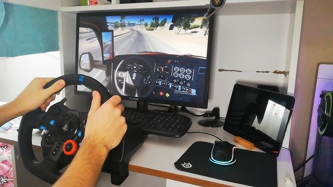
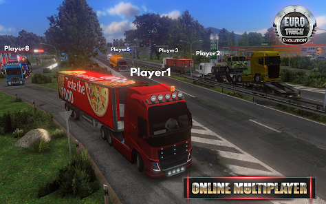

Euro Truck Simulator 2
Lançado oficialmente em 19 de outubro de 2012 | Gênero: Simulação de direção e mundo aberto

Viaje por países europeus transportando mercadorias e outros tipos de carga enquanto testa suas habilidades de direção em rodovias e dentro das cidades com caminhões que você normalmente vê nas estradas da Europa! Torne-se um motorista de elite e o chefe da sua própria empresa de transporte, expandindo seu império econômico dentro do jogo.
O mundo de Euro Truck Simulator 2 está repleto de trabalhos e desafios – com centenas de entregas para realizar por toda a Europa virtual. Você pode viajar e visitar diversos países durante as missões ou simplesmente dirigir pelas milhares de rodovias do jogo, apenas apreciando as paisagens detalhadas. Qualquer cidade ou local que você visitar será baseado em locais reais, então fique atento a pontos turísticos e outros monumentos enquanto atravessa o continente.
O jogo também conta com 25 caminhões licenciados e incontáveis possibilidades de personalização, permitindo que você monte uma frota exatamente do seu jeito! À medida que sua empresa cresce, você poderá contratar motoristas e gerenciar sua equipe para alcançar o máximo de lucro. Euro Truck Simulator 2 te dá liberdade para expandir seus negócios como quiser – você decide onde comprar garagens, quais caminhões seus funcionários irão dirigir e como suas carreiras serão moldadas.
Informações Gerais
Plataformas
PC (Windows, Linux, macOS) – Disponível na Steam, onde você pode comprá-lo e baixá-lo digitalmente.
Desenvolvedor
A SCS Software é uma desenvolvedora de jogos da República Tcheca, fundada em 1997. Ela é especializada em simuladores de veículos, sendo mais conhecida por títulos como Euro Truck Simulator 2 e American Truck Simulator.
Funcionalidades
Compatilidade com Volantes
Jogar Euro Truck Simulator 2 (ETS2) com o Logitech G29 transforma completamente a experiência, tornando a simulação muito mais realista e imersiva. O volante permite sentir o peso do caminhão, as irregularidades da estrada e a resistência ao fazer curvas, criando uma direção mais próxima da vida real.
Modo Multiplayer
Jogar Euro Truck Simulator 2 (ETS2) com os amigos, especialmente no TruckersMP (mod multiplayer), torna a experiência ainda mais divertida e imersiva. Você pode viajar em comboio, conversar pelo chat de voz e até fazer entregas juntos, simulando uma empresa de transporte real.
Mods
Jogar Euro Truck Simulator 2 (ETS2) com mods deixa a experiência muito mais rica e personalizada. Eles permitem adicionar novos caminhões, mapas, gráficos aprimorados e até tráfego mais realista, tornando a simulação mais envolvente.